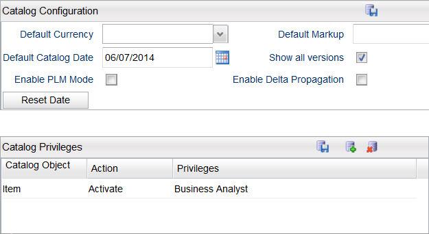

The Catalog Configuration page is available to set default currency, markup, date, and privileges for the Catalog.
Note: Catalog configuration changes are per node. As a result, you must manually ensure that you set the same configuration changes for all nodes that are running the Catalog application.
The Catalog Configuration page has the following fields:
| Field | Description |
|---|---|
| Default Currency | Set a default currency. In the case of no currency specified at the object level, an object will default to this currency. |
| Default Markup | Set a default markup value. In the case of no values given at the object level, an object will default to this value. |
| Default Catalog Date | Select this field to set the catalog system date. All subsequent calls to catalog APIs use this date. You can reset the date in this field by clicking the Reset Date button. |
| Show all versions | Selecting this property displays all versions of versioned objects. When this property is disabled, only the current applicable version is displayed. |
| Enable PLD Mode | Selecting this property allows you to enable PLD mode. When enabled, the status fields become read-only. The status of objects can only be changed through the project status. |
| Enable Delta Propagation | Delta indicates the difference between the old effective date and the project's start date. When you select this checkbox, the following behaviour occurs:
When you do not use this checkbox, the following behaviour occurs:
|
You can assign catalog privileges to a catalog object. The Catalog Privileges document outlines the steps for creating a Privilege within Catalog and assigning the privilege to a user.